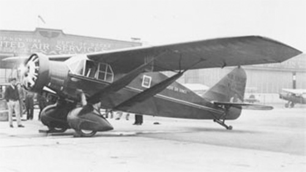

Bellanca J-300

- Разработчик: Bellanca
- Страна: США
- Первый полет: 1931
- Тип: Cамолет для дальних перелетов
В 1931 году компания Bellanca Aircraft Corporation построила очередной самолет для дальних перелетов получивший обозначение Bellanca Special J-300. Он представлял собой переделку CH-300 Peacemaker - вместо пассажирского отсека установили большой топливный бак, а силовую установку заменили на 300-сильный Wright Whirlwind.
Первый самолет (NR797W) получивший имя "Liberty" предназначался для перелета с острова Ньюфаундленд в Копенгаген. Долететь до Дании пилотам не удалось и машина приземлилась в Германии пролетев 32 часа.
В 1933 году два польских эмигранта Болеслав и Юзеф Адамовичи (Bolesław i Józef Adamowiczowie) купили NR797W для перелета в Польшу. Самолет сманил имя на "Warsaw". Только со второй попытки, в июне 1934 года, перелет с острова Ньюфаундленд через Нормандию в Варшаву осуществился. Компания LOPP выкупила J-300, после чего он сменил регистрацию на SP-BPG.
Следующий самолет (NR761W) с именем "Cape Cod" смог завершить перелет из Нью-Йорка в Стамбул преодолев 5014 миль (8069 км) за 49 часов и 19 минут. Позднее имя самолета сменили на "American Legion".
Третий J-300 (NR13137) названный "Leonardo da Vinci" пилотируемый Цезаре Сабели (Cesare Sabelli) и Джорджем Пондм (George Pond) не смог достичь Италии, приземлившись только в Ирландии.
Эти полеты сделали компанию очень известной, что позволила ей еще продать два J-300 (NR782W и NR13199), а так же один J-3-500 "Santa Lucia", построенный для генерала Франческо де Пинедо планировавшего долететь на нем из США в Персию.
| Летно технические характеристики | |
|---|---|
| Модификация | Bellanca J-300 |
| Размах крыла максимальный, м | 14.42 |
| Длина, м | 8.45 |
| Высота, м | |
| Площадь крыла, м2 | |
| Масса, кг | |
| - пустого самолета | |
| - нормальная взлетная | |
| Тип двигателя | 1 ПД Wright Whirlwind |
| Мощность, л.с. | 1 х 300 |
| Максимальная скорость у земли, км/ч | |
| Практическая дальность, км | |
| Практический потолок, м | |
| Экипаж, чел | 2 |
| Полезная нагрузка: | |